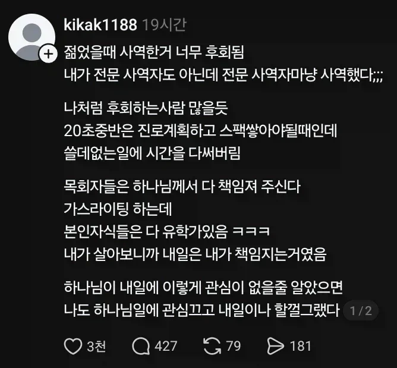

젊을때 교회간거 후회함
댓글
어릴때 필요로하는일 해주면 보상받겠지하고 하다 저런후회많이함 그래서 보통 부모님들이 진로잡아주는거고
근데 교회 안갔어도 그 시간에 자기계발했을거라는 근거가 있음?
대형키즈카페갔는데 교회에서 아이들데리고 단체로 왔더라구.
애들 수십명 뛰댕기는거 젊은 청년부 둘이서 낑낑대며 인솔하고 나이든 장로 권사 이런 양반들은 커피타고 앉아서 하루죙일 노가리까고 있더라
인생살면 고민해야하고 강구하면서 선택지를 골라야 하는 순간이 오게 되어 있음. 이 때 고민하고 선택하고 책임지는 일련의 과정이 매우 고통스러움. 그래서 많은 사람들이 이 선택의 과정을 절대자, 초월자, 상급자에게 의탁하고 싶어하고 의탁하는 결정을 내림. 그래서 책임의 의탁으로 마음의 평안을 얻음.
이걸 반드시 나쁘다고 할수는 없음. 인간의 마음은 유약하고 모든 사람들이 강한 마음을 가진것도 아니니까. 다만 본인이 선택하지 않는 삶을 선택한 순간 그 삶의 주인이기를 포기했으니 그 결과또한 단지 내려받는 수밖에 없다는걸 인정해야하는거고.
성인 되기 전까지 아니면 자아가 확립 되기 전까진 종교 같은건 차단시키는게 맞다고 생각함.
자신을 깎아가면서 사역해야 하는 순간이 꼭 청년의 때라고 생각하지 않음.
교회 오래다닌 사람으로... 종교가 있는 사람이라면 하나님을 위해 나를 사랑할 줄 알아야 한다고 생각함.
이타적이기 이전에 나를 사랑할 수 있어야 그 이타적인 행동이 후회가 없고 순도가 높아짐.
안타깝지... 어쩌면 교회라는 구조의 가스라이팅 일 수도 있고...
내 인생 내가 책임져야하는데
신만 찾는 사람들 보면 안타까움
신은 너한테 관심 없어
있든 없든 간에
시간날려 돈날려